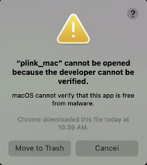
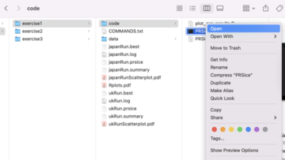
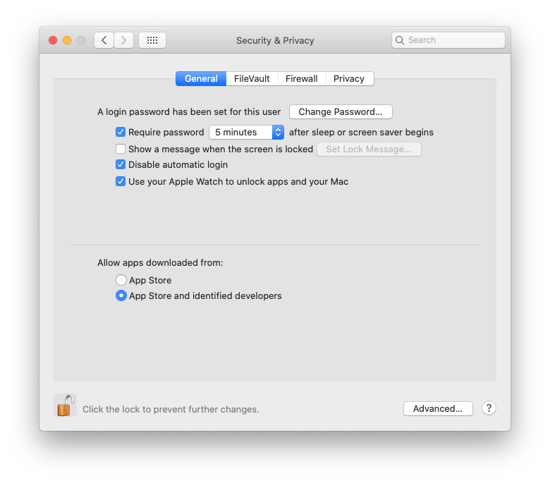
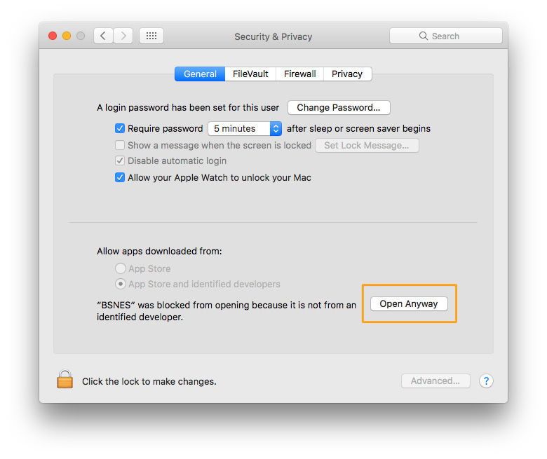

MacOs Permission Errors

If you see this error, Do not click: Move To Trash.
Instead click on the top right hand corner of the box, or stop running whatever program you are using and follow the instructions below to give your system permission to run downloaded software. to give your system permission to run downloaded software.
Shortcut: Users report that this shortcut can also be used to change program permissions:
- User finder navigate to the file in question.
- Right click on the icon and select open.
- A warning will pop-up. Click open and this program can be run in the future. 
1- Change Default Settings
By default macOS allows you to open apps from the official Mac App Store only, If you have this set as your default you can change this if you:
- Open System Preferences.
- Go to the Security & Privacy tab.
- Click on the lock and enter your password.
- Change settings to include identified developers (see below):

2- Allow Exceptions
Expanding permissions to include "identified developers" is required but not sufficient. To obtain further permission to run Plink or any other unapproved program you can:
- Open System Preferences.
- Go to Security & Privacy and select the General tab.
- If this has happened within the hour, this page will give you an override button to open Open Anyway.
- Enter you password as above and click this button.
- You will be asked to once more which will create an exception allowing you to run Plink in the future.

BridgePRS specific errors
If this problem has occured when running bridgePRS and you have moved plink to the trash you will have to recover it. Additionally the empty files created by a failed attempt to run Plink can cause problems if BridgePRS tries to recover your progress.
Restarting a bridgePRS run
You can avoid this problem by manually deleting your output directory and starting over, or by using the restart flag:
$./bridgePRS pipeline go -o out1 --config_files data/afr.config data/eur.config --phenotype y --restart